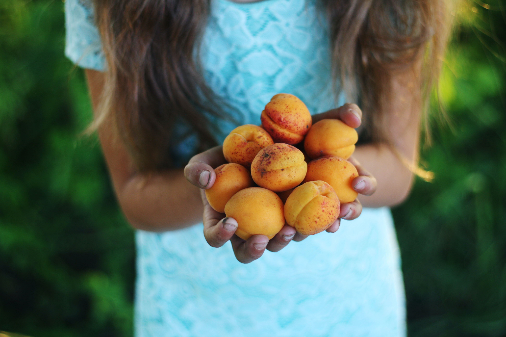

VISIT HAWICK CHILDREN'S FARM
Come visit our lovely farmhouse neslted amongst the Scottish borders.
We've a petting zoo, dramatic hill walks, fine local produce for sale, and a cosy cafe to keep you going all day. There really is something for everyone here!
You'll find us just off the A7, halfway between Carlisle & Edinburgh, so why not stop and have a break?
HOW TO REACH USHAWICK CHILDREN'S FARM

A perfect day out...
Our Farm Shop is literally bursting with delicious produce from across the Scottish borders. And for those who want to taste it before they return home, our fine cafe & restaurant has freshly cooked traditional fare that'll keep you coming back for more!
In addition to our perfect Petting Zoo for the kids, our Park is the perfect place for older children to play.
And for the more adventurous, Hawick Farm boasts over 100 miles of excellent hill walking for a good ramble.